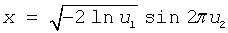
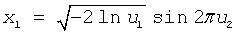
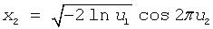
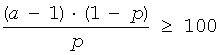

Intel® oneAPI Math Kernel Library Developer Reference - Fortran
The names of the routines in VS random number generators are lowercase (virnguniform). The names are not case-sensitive.
The names of generator routines have the following structure:
v<type of result>rng<distribution>
where
v is the prefix of a VS vector function.
<type of result> is either s, d, or i and specifies one of the following types:
REAL
DOUBLE PRECISION
INTEGER
Prefixes s and d apply to continuous distributions only, prefix i applies only to discrete case.
rng indicates that the routine is a random generator.
<distribution> specifies the type of statistical distribution.
Names of service routines follow the template below:
vsl<name>
where
vsl is the prefix of a VS service function.
<name> contains a short function name.
For a more detailed description of service routines, refer to Service Routines and Advanced Service Routines.
The prototype of each generator routine corresponding to a given probability distribution fits the following structure:
status = <function name>( method, stream, n, r, [<distribution parameters>] )
where
method defines the method of generation. A detailed description of this parameter can be found in table "Values of <method> in method parameter". See below, where the structure of the method parameter name is explained.
stream defines the descriptor of the random stream and must have a non-zero value. Random streams, descriptors, and their usage are discussed further in Random Streams and Service Routines.
n defines the number of random values to be generated. If n is less than or equal to zero, no values are generated. Furthermore, if n is negative, an error condition is set.
r defines the destination array for the generated numbers. The dimension of the array must be large enough to store at least n random numbers.
status defines the error status of a VS routine. See Error Reporting for a detailed description of error status values.
Additional parameters included into <distribution parameters> field are individual for each generator routine and are described in detail in Distribution Generators.
To invoke a distribution generator, use a call to the respective VS routine. For example, to obtain a vector r, composed of n independent and identically distributed random numbers with normal (Gaussian) distribution, that have the mean value a and standard deviation sigma, write the following:
status = vsrnggaussian( method, stream, n, r, a, sigma )
The name of a method parameter has the following structure:
VSL_RNG_METHOD_method<distribution>_<method>
VSL_RNG_METHOD_<distribution>_<method>_ACCURATE
where
Type of the name structure for the method parameter corresponds to fast and accurate modes of random number generation (see "Distribution Generators" and VS Notes for details).
Method names VSL_RNG_METHOD_<distribution>_<method>
and
VSL_RNG_METHOD_<distribution>_<method>_ACCURATE
should be used with
v<precision>Rng<distribution>
function only, where
is the probability distribution.Table "Values of <method> in method parameter" provides specific predefined values of the method name. The third column contains names of the functions that use the given method.
Method |
Short Description |
Functions |
|---|---|---|
STD |
Standard method. Currently there is only one method for these functions. |
Uniform (continuous), Uniform (discrete), UniformBits, UniformBits32, UniformBits64 |
BOXMULLER |
BOXMULLER generates normally distributed random number x thru the pair of uniformly distributed numbers u1 and u2 according to the formula:  |
|
BOXMULLER2 |
BOXMULLER2 generates normally distributed random numbers
x1 and
x2 thru the pair of uniformly distributed numbers
u1 and
u2 according to the formulas:   |
|
ICDF |
Inverse cumulative distribution function method. |
Exponential, Laplace, Weibull, Cauchy, Rayleigh, Gumbel, Bernoulli, Geometric, Gaussian, GaussianMV, Lognormal |
GNORM |
For α > 1, a gamma distributed random number is generated as a cube of properly scaled normal random number; for 0.6 ≤α < 1, a gamma distributed random number is generated using rejection from Weibull distribution; for α < 0.6, a gamma distributed random number is obtained using transformation of exponential power distribution; for α = 1, gamma distribution is reduced to exponential distribution. |
|
CJA |
For min(p, q) > 1, Cheng method is used; for min(p, q) < 1, Johnk method is used, if q + K·p2+ C≤ 0 (K = 0.852..., C=-0.956...) otherwise, Atkinson switching algorithm is used; for max(p, q) < 1, method of Johnk is used; for min(p, q) < 1, max(p, q)> 1, Atkinson switching algorithm is used (CJA stands for the first letters of Cheng, Johnk, Atkinson); for p = 1 or q = 1, inverse cumulative distribution function method is used;for p = 1 and q = 1, beta distribution is reduced to uniform distribution. |
|
BTPE |
Acceptance/rejection method for ntrial·min(p,1 - p)≥ 30 with decomposition into 4 regions:
|
|
H2PE |
Acceptance/rejection method for large mode of distribution with decomposition into 3 regions:
|
|
PTPE |
Acceptance/rejection method for λ≥ 27 with decomposition into 4 regions:
|
|
POISNORM |
for λ≥ 1, method based on Poisson inverse CDF approximation by Gaussian inverse CDF; for λ < 1, table lookup method is used. |
|
NBAR |
Acceptance/rejection method for ,  with decomposition into 5 regions:
|
|
CHI2GAMMA |
Random number generator of chi-square distribution with ν degrees of freedom. To generate any successive random number x of the chi-square distribution:
|
In this document, routines are often referred to by their base name (Gaussian) when this does not lead to ambiguity. In the routine reference, the full name (vsrnggaussian, vsRngGaussian) is always used in prototypes and code examples.